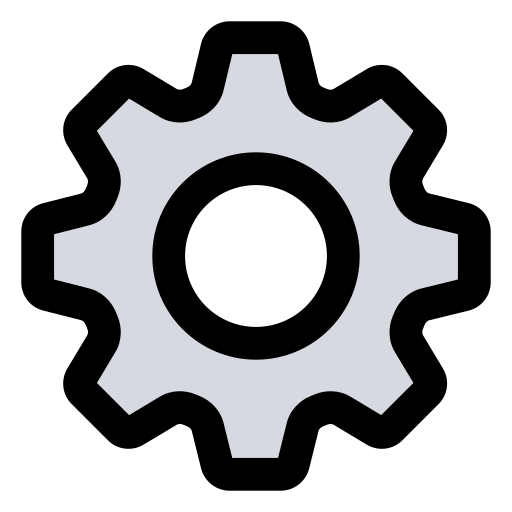
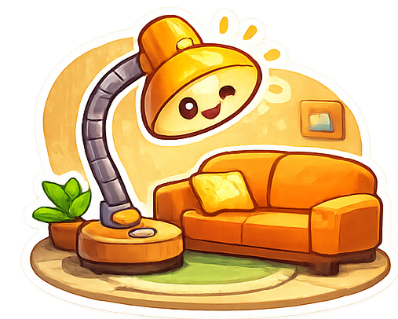
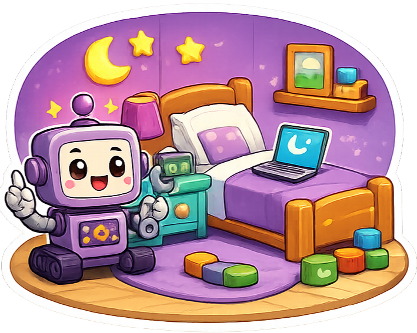
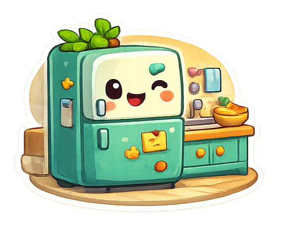
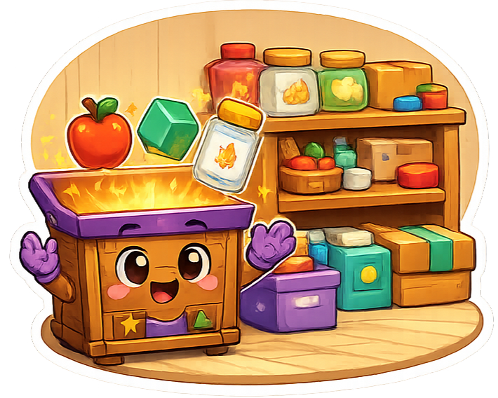

🔍 Aventura de lógica
Olá! Eu sou o Logi, seu guia investigador! Prontos para resolver os mistérios da casa?

Sala

Quarto

Cozinha

Despensa
2º e 3º ano do Ensino Fundamental
Atalhos de teclado
Complete cada cômodo para desbloquear o próximo. Quanto menos erros, mais pontos!